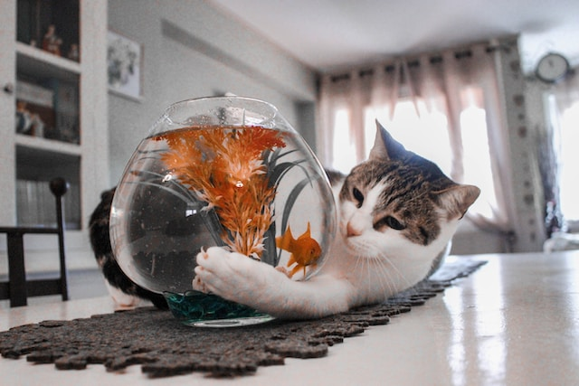

Kā rūpēties par mājdzīvnieku
Кaksts publicēts 2023. gada 26. martā
Maindzivnieki ir mazie un vēl neaizsargātie dzīvnieki, kas bieži tiek atstāti bezpajumtnieki un atrodas patversmēs, gaidot uz savu mājvietu. Lai gan šie dzīvnieki var būt nelieli, viņu rūpes prasa lielu atbildību un gatavību ziedot laiku, enerģiju un naudu. Šajā rakstā sniegšu dažus padomus par to, kā rūpēties par maindzivniekiem, lai viņi varētu izdzīvot un attīstīties veselīgi.
Nodrošiniet pienācīgu uzturu un dzīves apstākļus
Katrai sugai ir savs uztura un dzīvesvietas prasības. Pirms pieņemt lēmumu par maindzivnieka pieņemšanu, jums ir jābūt informētam par viņa vajadzībām un jānodrošina piemēroti dzīves apstākļi. Jums ir jānodrošina, lai dzīvnieks saņemtu pietiekami daudz barības, ūdens un, ja nepieciešams, papildu uzturu. Vienmēr ir svarīgi nodrošināt pietiekamu telpu, lai dzīvnieks varētu brīvi pārvietoties un pietiekami atpūsties.piemēram, visiem dzīvniekiem ir vajadzīga atsevišķa gulēšanas vieta, un kaķiem – pakaišu kastes
Nodrošiniet veselības aprūpi
Lai maindzivnieks būtu laimīgs un veselīgs, ir svarīgi nodrošināt viņam regulāru veselības aprūpi. Tas ietver apmeklējumus pie veterinārārsta, lai nodrošinātu regulāras vakcinācijas, slimību diagnostiku un ārstēšanu, kā arī dzīvnieka regulāru tīrīšanu un apstrādi pret parazītiem.
Nodrošiniet fizisko aktivitāti un apmācību
Maindzivniekiem ir nepieciešamas fiziskās aktivitātes, lai paliktu veseli un laimīgi. Ir svarīgi nodrošināt, ka jūsu dzīvnieks saņem pietiekami daudz iespēju vingrināties, spēlēties un izprast savu apkārtni. Vienmēr ir vērts izmantot iespēju piedalīties kursos un apmācībās, lai uzlabotu savu dzīvnieka uzvedību un uzlabotu savu saziņu ar viņu
Regulāri izvēdiniet mājokli
Maindzivniekiem nepieciešams tīrs un veselīgs dzīvesvide, tādēļ regulāra mājokļa izvēdināšana ir svarīga. Turklāt tas palīdzēs novērst no kaitēkļiem un sliktas smakas, kas var traucēt viņu labsajūtu.
Sniedziet pietiekami daudz uzmanības
Maindzivniekiem vajag daudz uzmanības un laiku, lai sajustos droši un mierīgi. Jums jāpievērš uzmanība viņu sociālajām vajadzībām, spēlējoties ar viņiem, dodot pārtiku ar roku un nodrošinot viņiem daudz laika jūsu klātbūtnē. Tas palīdzēs maindzivniekiem sajusties mājīgi un sasniedzot pilnību.
Populāri raksti
Suņu barība
Šeit ir daži padomi, kas palīdzēs izvēlēties sunim piemērotu ēdienu
Lasīt vairākMājdzīvnieku nagi
Par to kā viņiem griezt nagus un kā to darīt pareizi
Lasīt vairākTop 3 smieklīgi kaķi
Kaķu attēli no interneta
Lasīt vairāk